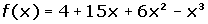
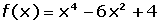
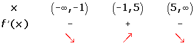
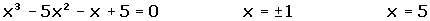
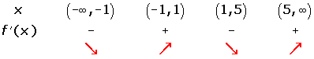
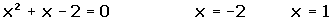
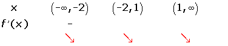
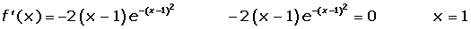
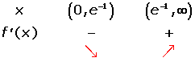

Applications of Derivatives Worksheet
1Calculate the intervals of increase and decrease of the following functions:
1. 
2. 
3.
4.
5.
6.
2Calculate the maximum and minimum values of the following functions:
1.
2.
3.
4.
3Find the intervals of concavity and convexity, and the points of inflection for the following the functions:
1.
2.
3.
4The value of a stock on a particular day can be derived by the following formula: (Supposing that the stock exchange works every day of one month for 30 days.)
C = 0.01x3 − 0.45x2 + 2.43x + 300
1. Determine the maximum and minimal values, as well as the days in which they happened.
2. Determine the time periods in which stocks rose or fell.
5Suppose that the yield, r, in the % of students in a one hour exam is given by:
r = 300t (1−t).
Where 0 < t < 1 is the time in hours.
1. At what moments does the yield increase or decrease?
2. At what moments is the yield zero?
3. When is the biggest yield obtained and which is?
1
Calculate the intervals of increase and decrease of the following functions:
1.



2. 



3. 



No solutions in  .
.

4. 


5. 



6. 



2
Calculate the maximum and minimum values of the following functions:
1. 


2. 


3. 


4.


3
Find the intervals of concavity and convexity, and the points of inflection for the following the functions:
1. 

2.


3. 


4
The value of a stock on a particular day can be derived by the following formula: (Supposing that the stock exchange works every day of one month for 30 days.)
C = 0.01x3 − 0.45x2 + 2.43x + 300
1. Determine the maximum and minimal values, as well as the days in which they happened.


2. Determine the time periods in which stocks rose or fell.

From days 1 to 3, and 27 to 30 the value of the stocks rose, and from days 3 to 27 the value of the stocks fell.
5
Suppose that the yield, r, in the % of students in a one hour exam is given by:
r = 300t (1−t).
Where 0 < t <1 is the time in hours.
1. At what moments does the yield increase or decrease?
r = 300t − 300t²
r′ = 300 − 600t
300 − 600t = 0 t = ½

2. At what moments is the yield zero?
300t (1−t) = 0 t = 0 t = 1
The yield is zero at the beginning (t = 0) and at the end of the test (t = 1).
3. When is the biggest yield obtained and which is?
r″ (t) = − 600
r (½)= 300 (½) − 300 (½)²= 75
Maximum yield: (½, 75)